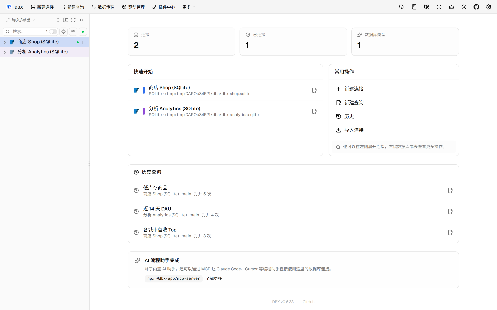
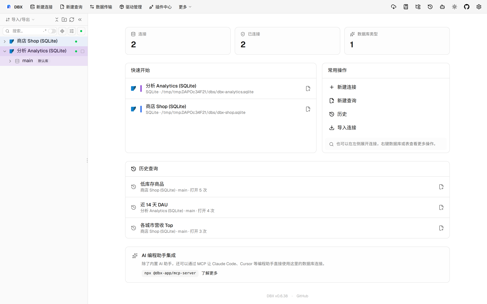
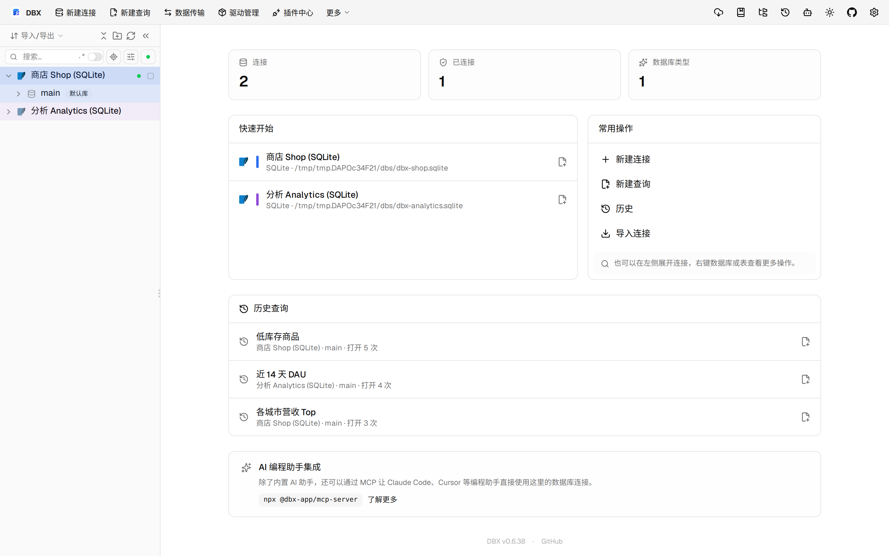

#11534 界面预览
commit 791cd2e · 回到 PR · 这个 PR 主要让 OceanBase Oracle 的星号查询和完成/诊断更准确地保留“当前 schema”和“真实解析目标”的分离，避免把同义词、业务别名和物理 ROWID 混在一起；同时在 ROWID 删除并发冲突时，保存结果会显示实际影响行数并保留冲突提示。
⚠️ 这次录制有 10 步没能按计划执行；带 ⚠️ 的截图拍摄于步骤失败之后，画面未必是说明文字所描述的状态。
红线是鼠标走过的轨迹，红色圆环是一次点击；底部文字是这一步在做什么。多个场景各自从应用初始状态开始。空格暂停，← → 逐段查看。

⚠️ OceanBase 星号查询保留别名与隐藏定位列 · 商店连接的数据库浏览页
 ⚠️ OceanBase 星号查询保留别名与隐藏定位列 · 打开订单表后的数据网格
⚠️ OceanBase 星号查询保留别名与隐藏定位列 · 打开订单表后的数据网格

⚠️ OceanBase 星号查询保留别名与隐藏定位列 · 分析表的数据网格

⚠️ ROWID 保存冲突提示 · 进入可编辑的数据网格